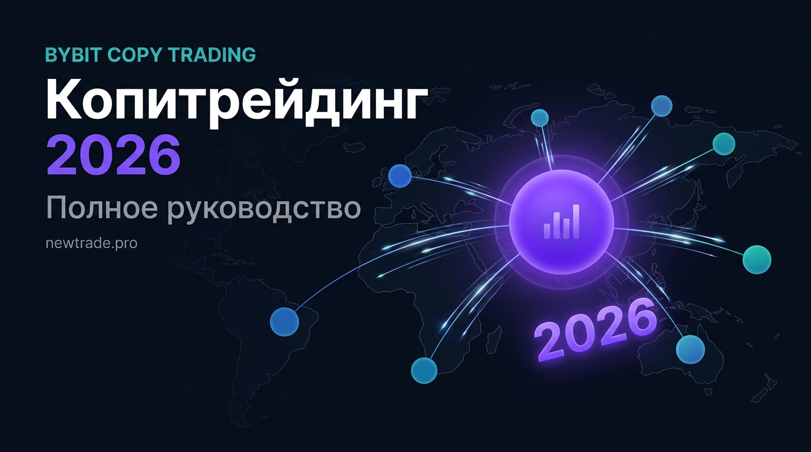

Копитрейдинг на Bybit 2026: полное руководство для начинающих

Представьте: вы подключаетесь к счёту опытного трейдера — и каждая его сделка автоматически копируется на ваш аккаунт. Он открывает лонг по BTC — вы тоже. Он фиксирует прибыль — вы тоже. Это и есть копитрейдинг.
В 2026 году копитрейдинг на Bybit стал одним из самых популярных способов участия в крипторынке для тех, кто не хочет или не успевает торговать самостоятельно. Более 5 миллионов пользователей по всему миру используют этот инструмент — от новичков до занятых профессионалов.
В этом руководстве — всё, что нужно знать для старта: как устроен механизм, как выбрать мастера, сколько можно заработать и какие ошибки совершают новички.
Bybit — одна из крупнейших криптобирж мира с оборотом более $15 млрд в сутки. Раздел Copy Trading позволяет подписаться на стратегии верифицированных мастер-трейдеров и автоматически копировать их позиции в реальном времени. Минимальный порог входа — от $10, без технических знаний.
Как работает копитрейдинг: механизм за 60 секунд
Весь процесс автоматический. Вы выбираете мастера, выделяете часть капитала — и дальше система делает всё сама:
| Участник | Действие |
|---|---|
| Мастер-трейдер | Профессионал открывает сделку на своём счёте по своей стратегии |
| Платформа Bybit | Система автоматически копирует параметры сделки: актив, направление, размер (пропорционально) |
| Ваш счёт | Идентичная сделка мгновенно открывается на вашем аккаунте без вашего участия |
| Результат | Прибыль или убыток отражается на обоих счетах пропорционально вложенному капиталу |
Ключевое слово здесь — «пропорционально». Если мастер вкладывает в сделку 5% своего капитала, система вложит ровно 5% от суммы, которую вы выделили на копирование. Ваши риски масштабируются вместе с позицией.
При копитрейдинге мастер-трейдер не имеет доступа к вашим деньгам. Он не может вывести средства с вашего счёта или управлять ими напрямую. Вы в любой момент можете остановить копирование и вернуть капитал в свободное распоряжение.
Копитрейдинг vs доверительное управление: в чём разница
Многие путают копитрейдинг с доверительным управлением. Это принципиально разные вещи:
| Параметр | Копитрейдинг | Доверительное управление |
|---|---|---|
| Деньги у кого? | На вашем счёте на бирже | Переданы управляющему |
| Доступ к средствам | В любой момент | По условиям договора |
| Прозрачность | Все сделки видны в реальном времени | Часто — только итоговый отчёт |
| Отмена подписки | Мгновенно, одна кнопка | Может быть период ожидания |
| Регулирование | Биржа (Bybit) | Зависит от юрисдикции |
Как начать: пошаговая инструкция
Шаг 1. Зарегистрируйтесь и верифицируйтесь на Bybit
Если у вас ещё нет аккаунта — перейдите на bybit.com и пройдите регистрацию. Обязательно пройдите KYC-верификацию. В 2026 году это обязательное условие для доступа к Copy Trading. Верификация занимает от 15 минут до нескольких часов. Включите двухфакторную аутентификацию (2FA) для защиты аккаунта.
Шаг 2. Пополните торговый счёт
Перейдите в раздел «Активы» → «Депозит». Выберите удобный способ: криптовалюта (USDT, BTC, ETH), банковская карта, P2P-обмен. Для копитрейдинга рекомендуемый минимум — $200–500. Убедитесь, что средства находятся на деривативном счёте или едином торговом аккаунте (UTA) — именно там работает Copy Trading.
Шаг 3. Откройте раздел Copy Trading
В главном меню Bybit найдите раздел «Copy Trading». Перед вами появится список мастер-трейдеров с ключевыми показателями: ROI, просадка, количество подписчиков, стиль торговли. Используйте фильтры: период (30/90/180 дней), ROI, максимальная просадка, торговая пара. Не берите первого из списка — потратьте 20–30 минут на анализ нескольких кандидатов.
Шаг 4. Выберите мастер-трейдера
Откройте профиль каждого интересного мастера и изучите полную статистику. Смотрите на показатели за 3–6 месяцев, а не за последнюю неделю. Проверьте историю сделок: как мастер торговал в период падения рынка? Оцените стиль: скальпер или свинг-трейдер?
Шаг 5. Настройте параметры копирования
Нажмите «Копировать» на профиле выбранного мастера. Укажите сумму, которую выделяете на копирование (не весь депозит). Выберите режим копирования: «Фиксированная сумма» или «Пропорционально». Установите лимит потерь — например, -20% от выделенной суммы.
Никогда не выделяйте на одного мастера более 30–40% от торгового капитала. Диверсифицируйте между 2–3 мастерами с разными стилями.
Шаг 6. Мониторьте и анализируйте
Раздел «Мои копирования» показывает все активные подписки и текущие результаты. Еженедельно сверяйте реальные результаты с ожидаемыми по статистике мастера. Не паникуйте при небольших минусовых неделях — это часть любой торговой стратегии. Пересматривайте портфель мастеров раз в 1–2 месяца.
Как выбрать мастера: 8 критериев профессионального анализа
Выбор мастера — самое важное решение в копитрейдинге. Нужно смотреть на реальную статистику в разрезе нескольких показателей:
| Параметр | Что смотреть | Важный нюанс |
|---|---|---|
| ROI (доходность) | Смотреть за 3–6 месяцев, не за последнюю неделю | Краткосрочные всплески могут быть случайными |
| Максимальная просадка (MDD) | Не более 20–25% за всё время | Просадка 40%+ — стратегия с высоким риском |
| Процент прибыльных сделок | 45–65% — рабочий диапазон | Выше 80% — возможен мартингейл |
| Количество сделок | Минимум 50–100 сделок в статистике | Меньше 20 — статистика ненадёжна |
| Срок работы на платформе | Минимум 3–6 месяцев активной торговли | Новые мастера — высокий риск |
| Количество подписчиков | Ориентир, но не главный критерий | Популярность ≠ качество стратегии |
| Стиль торговли | Скальпинг / свинг / позиционная | Выбирайте под свой риск-профиль |
| Кредитное плечо мастера | Предпочтительно 1x–5x | Плечо 20x+ — агрессивная рисковая стратегия |
Красные флаги — немедленно уходите
- ROI 500%+ за месяц — невозможно без огромного риска
- Просадка 50%+ в истории — стратегия может обнулить капитал
- Менее 20 сделок в статистике — нет достаточной выборки
- Мастер удалял убыточные сделки из истории — манипуляция статистикой
- Отсутствие торговли в периоды волатильности — возможная заморозка
Сколько можно заработать на копитрейдинге в 2026 году
Реалистичные ожидания — основа разумного подхода. В 2026 году, при зрелом и конкурентном крипторынке, ориентиры такие:
| Тип мастера | Капитал | Ожидаемый ROI/мес | На что рассчитывать |
|---|---|---|---|
| Консервативный | $500–2 000 | 3–8% | $15–160 / мес |
| Сбалансированный | $2 000–10 000 | 8–20% | $160–2 000 / мес |
| Агрессивный | $10 000+ | 20–50% | $2 000–5 000 / мес |
Bybit берёт с прибыльных сделок комиссию в пользу мастера — обычно 8–15% от вашей прибыли. Учитывайте это при расчёте чистой доходности: если мастер заработал вам +10%, реально в кармане останется +8.5–9.2%.
Частые вопросы о копитрейдинге на Bybit
Могу ли я остановить копирование в любой момент?
Да. В разделе «Мои копирования» нажмите «Остановить» — копирование прекратится немедленно. Открытые позиции останутся открытыми; вы можете закрыть их вручную или дождаться, пока мастер закроет их сам.
Что происходит, если мастер уйдёт с платформы?
Bybit уведомит вас об изменении статуса мастера. Открытые позиции можно закрыть вручную. Ваши деньги остаются на вашем счёте — мастер не имеет к ним доступа.
Можно ли копировать нескольких мастеров одновременно?
Да, Bybit позволяет копировать до 10 мастеров одновременно. Оптимальный вариант для диверсификации — 2–4 мастера с разными стратегиями.
Копитрейдинг — это пассивный доход?
Условно. Ваши деньги работают без вашего участия в сделках. Но требуется регулярный мониторинг (15–30 минут в неделю) и периодический пересмотр портфеля мастеров.
С какой суммы лучше начинать?
Минимум — $200–300 на одного мастера. Комфортный старт — $500–1 000, распределённые между 2–3 мастерами.
Вывод
Копитрейдинг на Bybit в 2026 году — это зрелый, прозрачный и доступный инструмент для участия в крипторынке без необходимости самостоятельно торговать. Ключевые преимущества: ваши деньги остаются на вашем счёте, всё прозрачно и отменяется в один клик.
Главное условие успеха — осознанный выбор мастера на основе реальной статистики, а не красивых обещаний. Выделяйте разумную сумму, диверсифицируйте между несколькими стратегиями и регулярно отслеживайте результаты.
Копитрейдинг — это не «деньги из воздуха». Это делегирование торговых решений профессионалу при сохранении полного контроля над своим капиталом. Подходите к выбору мастера так же серьёзно, как к выбору управляющего активами.
Копитрейдинг с проверенной стратегией
На newtrade.pro — авторский копитрейдинг на Bybit с верифицированной историей сделок, прозрачной статистикой и настройкой под ваш капитал. Минимум действий — максимум контроля.
Подключиться на newtrade.pro →